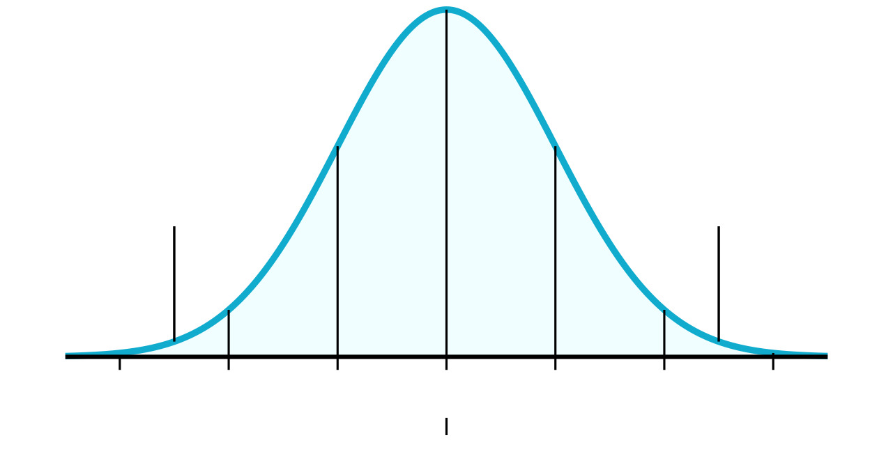
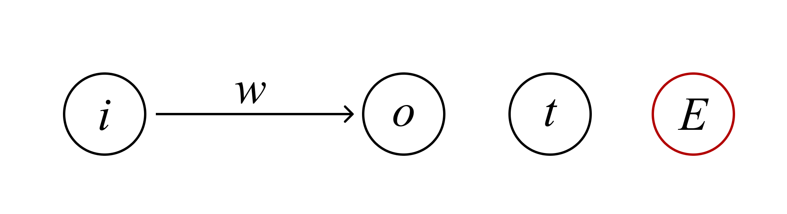

We have introduced most of the components in a neural network including the neuron, weights or connections, biases, layer terminology and activation functions, so now it is time to introduce learning rates and algorithms.
Neurons consists of several variables: weights and biases. We need to know how to initialize them, and how to find the most suitable values for them. To do this, we need to first pass through the network once, the process of which is called forward propagation (also called stepping, and forward-pass). Afterward, we need to choose a learning algorithm that works well with the current neural network structure and use it to find the most suitable set of values for the variables.
In this chapter, we will cover basic initialization of parameters and a single-layer neural network learning algorithm.
Usually, the weights and biases of a single-layer neural network are initialized using Gaussian distribution(sometimes called normal distribution) or assigned a value of 0. Here is a diagram of what gaussian distribution does:
Figure 4-1: Gaussian Distribution Chart
It distributes a series of values with the most common values being the ones closest to a middle value, and having values further away from the middle value appears less. Usually, the middle value is 0 for initializing weights and biases. The reason that this method is used is that it randomly initializes all weights and biases with distributed values so that you can start at a different location each time, perhaps altering the accuracy of the network. People tend to stick to the initialization with 0s when trying to compare different models with each other.
These values are then adjusted using a learning algorithm called the delta rule. Now, before I show the entire formula for the delta rule, let’s try derive it!
Neural networks are structures that perform generalization well, meaning that these networks learn by finding patterns in a given dataset and applying these patterns onto a set of input data. At first, parameters like weights and biases are initialized randomly, so the network isn’t able to perform the desired task well. To improve, networks then compare their initial outputs after forward propagation and see how much it differs from the target (or desired) output. This notion of differing is usually referred to as error or loss. It can be as simple as calculating the difference between a desired output and the network’s predicted output, although we usually use a function called the mean squared error, which simply just squares the difference between a target and predicted output pair: $$C(t,y)=(t-y)^2$$ Where \(y\) refers to the predicted output (result of forward propagating through the network) and \(t\) refers to the target or desired output of the network for a specific input pair that was inputted into the network. MSE (mean squared error) usually takes the form: $${1\over{n}}\sum_{i\,=\,1}^{n}{(t_i-y_i)^2}$$
Where we calculate the average error of the network when given \(n\) input samples and their target output samples. MSE is usually referred to as a cost function (and thus \(C\)) because it performs an averaging of \(n\) error values instead of just calculating the error of a single input sample. Note now that given an error function able to measure the difference between an expected output and an actual output, we can adjust our parameters based on this calculated error such that in the next iteration, the network has a lower error value than before on the same input sample(s). This process is called minimization or more generally, optimization. Furthermore, to lower an error value by adjusting parameters, we need to know how adjusting each parameter affects that error value. Sounds familiar? Well, it is! Remember that derivatives are the measure of how sensitive a function is to changes to its input! So we can use derivatives to find how sensitive our error function is to changes to particular parameters. Then, adjusting our parameters is just as simple as increasing or decreasing their values such that the error can be decreased. For example, if the predicted output is greater than the expected output, then say, all weights (and their respective neurons) that are activated by the given input sample should be decreased, and vice versa (assuming inputs are positive values). But before we try to apply derivatives, there are a few rules that will come in handy:
Note that we will deal with some partial derivatives, which are quite similar to derivatives. Partial derivatives is deriving how a multivariable function changes with respect to a single variable. In this case, you can just leave other variables as-is, and only derive the targeted variable. That’s pretty much all you’ll need for now, let’s get started!
Let’s assume that our network as 1 input neuron and 1 output neuron. The task is for the network to be able to double an input value and return it in the output neuron. Here is a diagram of the network:
Figure 4-2: A diagram of a 1-1 neural network.
Here, \(i\) refers to the input, \(w\) a weight value, \(o\) the output of the network, \(t\) the target output of the network, and \(E\) the error of the network (calculated based on the target and actual output). We won’t include a bias in the network for more simplicity and also because it isn’t necessary (doubling values doesn’t have a correlation with an added constant). We’ll use the identity activation function for simplicity and also because we aren’t fitting our values into a certain range (but we’ll assume there might be a different activation function). Let’s write the relationships between these variables.
\(o=\sigma(wi)\)
\(C(t, o)=\displaystyle{1\over{2}}(t-o)^2\)
Note that the cost function \(C\) is a slightly modified version of the mean squared error such that the error is halved after being squared.
Also, let’s have \((i, t)\) be either \((1,\,2)\), \((2.5,\,5)\), or \((2,\,4)\) and have \(w\) be initialized as 0.
Note that:
\(\displaystyle{{\partial C(t, o)}\over{\partial w}}={{\partial C(t,o)}\over{\partial o}}{{\partial o}\over{\partial wi}}{{\partial wi}\over{\partial w}}\)
\(\displaystyle{{\partial C(t,o)}\over{\partial o}}={{\partial{1\over{2}}(t-o)^2}\over{\partial o}}={{1}\over{2}}[2(t-o)^{2\,-\,1}\cdot(-1)]=-(t-o)\)
\(\displaystyle{{\partial o}\over{\partial wi}} = {{\partial \sigma(wi)}\over{\partial wi}}\)
In our case, \(\sigma(wi)=wi\), so: \(\displaystyle{{dwi}\over{dwi}}=1\). And \(\displaystyle{{\partial wi}\over{\partial w}}=i\), so all in all, we get:
\(\displaystyle{{\partial C(t, o)}\over{\partial w}}=-(t-o)\cdot i\)
Note that this derivative tells us the gradient (amount of change) of \(C\) based on changes to \(w\). It also tells us which direction to adjust \(w\) (i.e., increase or decrease): a negative slope indicates that there is a lower cost at some bigger \(w\) and a positive slope tells us there is a lower cost at some smaller \(w\). Notice that to lower our cost, we need to move in the direction opposite that of the gradient value. Thus:
\(\Delta w=-(o-t)i\)
\(w_n=w+\Delta w\)
We can rewrite this slightly as:
\(\Delta w=(o-t)i\)
\(w_n=w-\Delta w\)
From now, I’ll use this updated version (where \(w_n=w-\Delta w\) and \(\Delta w=(o-t)i\) instead of \(w_n=w+\Delta w\) and \(\Delta w=-(o-t)i\)). This \(\Delta w\) value is usually called the gradient. For the general case (where the activation function may not be the identity activation function, and there may be multiple inputs):
\(\Delta w = \sigma'(wi)(o-t)i\)
\(w_n=w-\Delta w\)
Usually another constant (often denoted as \(\alpha\) or \(\eta\)) is multiplied to \(\Delta w\) in order to make weight updates smaller and prevent “overstepping”, so let’s just set this constant at 0.1 for now. More on this constant value and “overstepping” will be discussed later. For now, let’s try manually calculate a few iterations with our delta rule for the two-neuron example! We’ll iterate through each of the three examples once and then test it on \(i=1\) to see whether there is any improvement.
To achieve better results, more iterations of training would be needed (we only cycled through the data once), but you can see that the weight value increased from 0 to 1.595, which is closer to the most optimal value of 2. To actually be able to say our network has improved, we need to compare the error value of our updated network with that of our original network on the same input (ideally, you should compare networks by their average error per sample, but it is simpler to just compare one particular sample’s error for this demonstration):
\((i,t)=(1,\,2)\), \(w=0\)
\(o=iw=1\cdot 0=0\)
\(\displaystyle{C(t, o)={1\over{2}}(t-o)^2={{1}\over{2}}(2-0)^2=2}\)
\((i,t)=(1,\,2)\), \(w=1.595\)
\(o=iw=1\cdot 1.595=1.595\)
\(\displaystyle{C(t, o)={1\over{2}}(t-o)^2={{1}\over{2}}(2-1.595)^2=0.0820125}\)
As you can see, the error of our updated network is lower than our original network, so our network improved! Note that the entire notion of updating parameters in this manner is called gradient descent. Normally in gradient descent, an entire set of inputs are used to calculate an average error, which is then used to perform one single weight update. Our version of gradient descent (where we perform updates after calculating the error for each example) is called stochastic gradient descent, whereas there is also mini-batch gradient descent (where updates are performed after an averaged error over a batch of inputs).
Now, let’s review the delta rule and interpret it in another perspective. As a reminder, the general delta rule is expressed mathematically as:
$$\Delta w = \alpha(y - t)\sigma\,'(h)x$$
$$w_{t} = w_{t\ -\ 1} - \Delta w$$
In the first equation above, \(\Delta w\) signifies the change calculated for each of the individual weights or biases in the network. \(\alpha\) refers to the learning rate, which is a constant that is multiplied with the other values. The learning rate helps to increase or decrease the change in weights or biases depending on whether it is bigger than 1 or smaller. This can be thought of as the length of step you take as you try to run down a valley. Your goal is to get to the bottom, so you cannot take massive steps, or else you will never reach that minimum point (you’ll keep overrunning and end up on the opposite sloping side). You cannot take tiny steps either because it will take you an unimaginably long time to get to the lowest point in the valley. The reason why I use a valley as an analogy for the learning rate instead of a mountain is that data scientists like to think of machine learning as a method that leads you to the lowest point on a function (“valley”) or the minima of the graph, which best fits the appropriate case, giving the best result. Some functions may also have several “peaks” (also called maxima) and “valleys” (minima), so the highest “peak” is usually called the global maximum, and the deepest “valley” is called the global minimum. Here is an example of what I mean:
Figure 4-3: Multivariable Graph Result for the equation:
$$\displaystyle{z = 0.5 + {{\cos(\sin(|y^{2}\ -\ x^{2}|))^{2}\ -\ 0.5}\over{[1\ +\ 0.001(y^{2}\ +\ x^{2})]^{2}}}} + 0.2 \times \cos(xy)^{2}$$
Any other “peaks” or “valleys” that are not the highest and lowest respectively are called local maximums and minimums respectively. The \(t\) and \(y\) variables in the equation stand for the target value or expected value and predicted value (the output of the network) and their difference is usually referred to as the training error. \(\sigma\,'(h)\) stands for the derivative of the activation function on a particular value \(h\) which is the weighted sum of inputs. Finally, \(x\) stands for the single input at the current index. The second equation shows that the next generation or iterations’ weights should be the difference between the previous weight and the change in the weight calculated in the first equation. The delta rule is sometimes simplified when the activation function is the identity activation function (linear) as:
$$\Delta w = \alpha(y - t)x$$
So, here are the steps in machine learning:
Note that the learning process should be repeated a certain amount of times(called epoch), for which all input sets are used for learning a certain number of times.